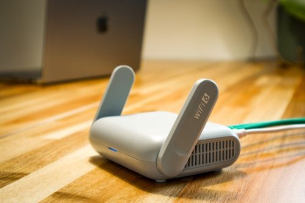

Internet & WiFi
WiFi Is Connected but the Internet Is Not Working
The WiFi symbol shows connected, but websites don't open and apps say 'no internet' — the five checks that find the culprit.

You open the WiFi list on your phone and your home network's name is simply not there — but your neighbor's networks show. This means the phone cannot hear the router's signal, or the router stopped broadcasting its name. Causes: the router is off or crashed, you are too far away, the network is set to hidden, or a band/compatibility mismatch.
Add the network manually: phone WiFi settings → Add Network → type the exact name (SSID), security WPA2, password — devices connect to hidden/odd networks this way, which also tells you the router is broadcasting (reachable) even if not listing.
The WiFi symbol shows connected, but websites don't open and apps say 'no internet' — the five checks that find the culprit.
Internet dies every night at 8–11 PM? You’re not imagining it — and it’s (mostly) not your router’s fault.
Your internet plan might be fine — your router’s address is the problem. Five placement mistakes, ranked by damage.